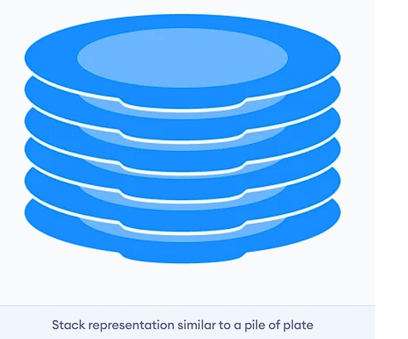

Coursework for Stacks
We have already covered Arrays and Linked Lists in our previous weeks as part of this course. In
this week we shall try to understand what stack data structure is and how to implement it using
arrays as well as linked Lists.
A Stack is a linear data structure that follows the LIFO (Last-In-First-Out) principle. It contains
only one pointer - top pointer pointing to the topmost element of the stack. Whenever an element is
added in the stack, it is added on the top of the stack, and an element can be deleted only from the
top of the stack. In other words, a stack can be defined as a container in which insertion and
deletion can be done from the one end known as the top of the stack.
A real-life example of a stack is shown below.

Properties of Stacks
Some key points related to stack are -
- 1. It is called as stack because it behaves like a real-world stack, piles of books, etc.
- 2. A Stack is an abstract data type with a pre-defined capacity, which means that it can store the elements of a limited size.
- 3. It is a data structure that follows some order to insert and delete the elements, and that order can be LIFO or FILO.
Operations on Stacks
There are some basic operations that allow us to perform different actions on a stack.
- 1. Push : Add an element to the top of a stack.
- 2. Pop : Remove an element from the top of a stack.
- 3. IsEmpty : Check if the stack is empty.
- 4. IsFull : Check if the stack is full
- 5. Peek : Get the value of the top element without removing it
Working of Stacks
As mentioned earlier, stacks work in Last-In-First-Out (LIFO) strategy. This strategy is followed by
the Push and Pop operations. The action performed by these 2 primary operations is shown below -

For more information please go through the following links -
You may also like to go through this video tutorial:
Contact School of Computer and Information Sciences, University of Hyderabad and submit an application with your roll number, semester, course id, course name to register for the complete course.